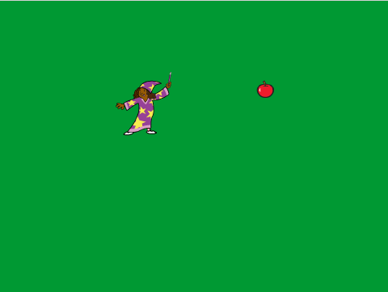
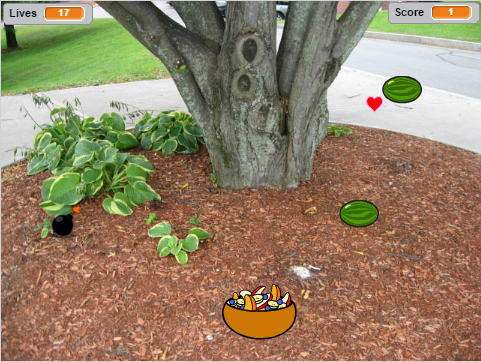

This is my Portfolio Page!




The purpose of my Fruit Catcher game was to get the highest score possible as there was no way anyone could beat the game. Throughout the code of the game, I used many forever loops to constantly chekc if the user made any movements and used them to make my own interval system. The initial script would keep checking if the user moved the bowl left or right, and it broadcasted a single message that initated another script that would spawn fruits at a certain interval. I made fruits spawn at a certain interval with a forever loop and wait code with a set variable which determined the rate at which fruits spawned. Creating an interval that spawned fruit at a set rate was the most difficult obstacle that I faced because before I used the time variabble that scratch had but it was very ineffective. Instead I created my own way of spawning fruit at a set rate by creating a variable that would store the rate. I would then use forever loops to continuously spawn fruit but the script would wait for the set rate.

Summary: This story is essentially about a man named Kwon Ki-Yong, a young homeless college dropout. We follow him through his adventure from rags to riches when he mysteriously stumbles upon a bag of money that can ride him of his burdens. You as the user can make critical decisions deciding his ultimate fate whether he dies in a tragic accident or lives to become a legend to the world.
Reflection: The process of this story basically went like this. We thought of what story we wanted to write, then added characters. We drew a story map with multiple branches. To have fun with the story we added multiple jokes and puns. With the outline completed my partner and I used the definition concept in python to create functions for different branches in the story. One problem we had while writing this story there were some inconsistency with the flow of the plot. To fix this we had multiple reviews of the entire story to smooth out the flow of the plot. While making the interactive reader I enjoyed writing the story the most because I got to write what I imagined. The thing I disliked was the numerous errors I made while typing because it was really difficult to revise the story in cloud 9. Thinking back to some of the other stories I read during the class period were the Generic Hero and the one about a Japanese man. I enjoyed these stories because they were well written and intriguing. If I had a chance to do it again, I would change up the story and add more detail because if I had more free time I would've added more decision points and imagery to our story.